使用Yarn本地部署Hadoop
修改配置文件
首先修改mapred-sit.xml文件：
cd /usr/local/hadoop/etc/hadoop
mv mapred-site.xml.template mapred-site.xml
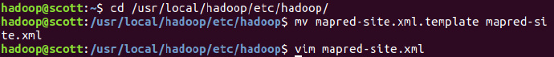
修改为：
<configuration>
<property>
<name>mapreduce.framework.name</name>
<value>yarn</value>
</property>
</configuration>
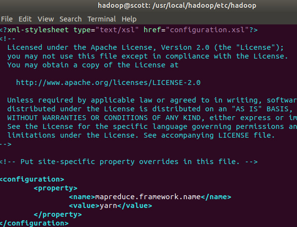
修改配置文件yarn-site.xml：
<configuration>
<property>
<name>yarn.nodemanager.aux-services</name>
<value>mapreduce_shuffle</value>
</property>
</configuration>
重新启动
start-dfs.sh 和 start-yarn.sh命令启动hadoop和yarn：
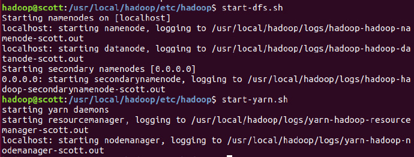
开启历史服务器，才能在Web中查看任务运行情况：
mr-jobhistory-daemon.sh start historyserver
再查看进程，多出NodeManager和ResourceManager两个进程：
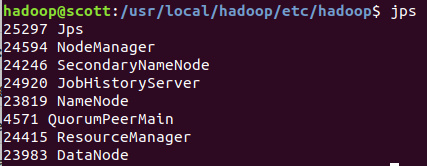
如果以后在伪分布式模式下启动Hadoop的时候不想启动Yarn，务必把配置文件mapred-site.xml重命名为mapred-site.xml.template
使用Yarn本地部署Spark
修改配置文件
cd /usr/local/spark/conf
vim spark-env.sh
添加：
export HADOOP_CONF_DIR=/usr/local/hadoop/etc/hadoop
这样Spark就可以跑在YARN上了，也没必要启动spark的master和slaves服务，因为是靠yarn进行任务调度，所以直接提交任务即可：
spark-shell --master yarn-client
提示ERROR，这是由于JAVA8的问题，具体参考这里。
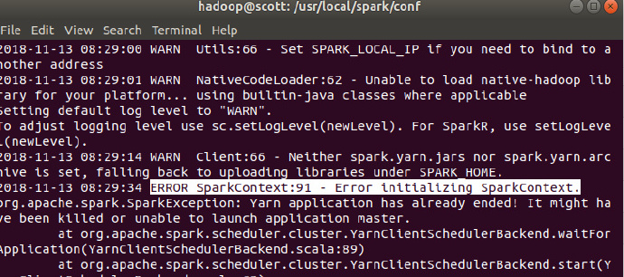
首先需要关闭hadoop和yarn：
stop-dfs.sh
stop-yarn.sh
在/usr/local/hadoop/etc/hadoop/目录下修改yarn-site.xml文件：
<property>
<name>yarn.nodemanager.pmem-check-enabled</name>
<value>false</value>
</property>
<property>
<name>yarn.nodemanager.vmem-check-enabled</name>
<value>false</value>
</property>
再次启动，成功：
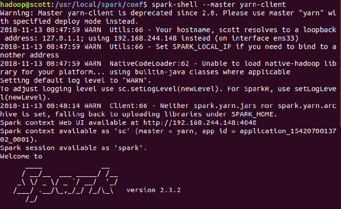
在shell中运行例子：
val textFile = sc.textFile("hdfs://localhost:9000/user/hadoop/input/k-means.dat")
textFile.first()
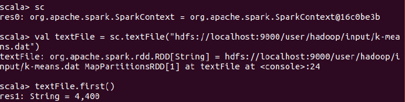
成功！
使用yarn查看作业
在浏览器中查看
在浏览器中输入lcoalhost:8088，在yarn中查看任务：
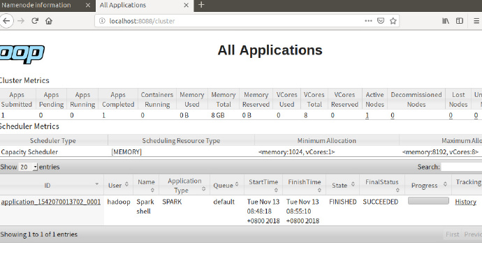
会发现spark的任务会提交到yarn，而无需启动master和slave节点。
使用hadoop提交
cd /usr/local/hadoop
hadoop jar ./share/hadoop/mapreduce/hadoop-mapreduce-examples-2.7.3.jar grep input output/yarn ‘dfs[a-z.]+’
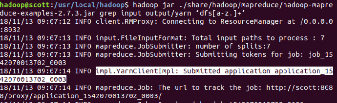
作业运行成功，在yarn中查看任务：
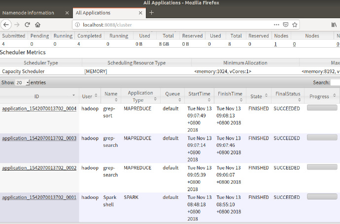
但是，无论该任务是否成功，在yarn中查看，只能知道这个container是否运行完，因此，需要通过logs进行查看任务的具体运行情况。
使用spark提交
只需要在master节点中添加master即可，例如：
spark-submit --class StuScore --master yarn StuScore-1.0.jar
注意：如果是自己编写的程序，不要在程序中将sparkcontext指定为local
查看yarn logs
在yarn-env.sh中查看log的目录：
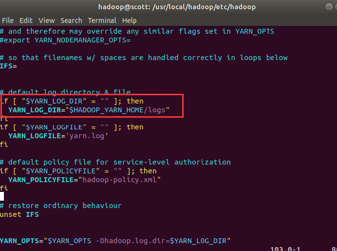
默认目录在/usr/local/hadoop/logs里面：
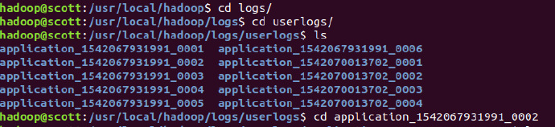
可以发现application的log都存放在里面，现在可以根据web上展示的applicationID选择需要查看的log
关于yarn的log，可参考这里。